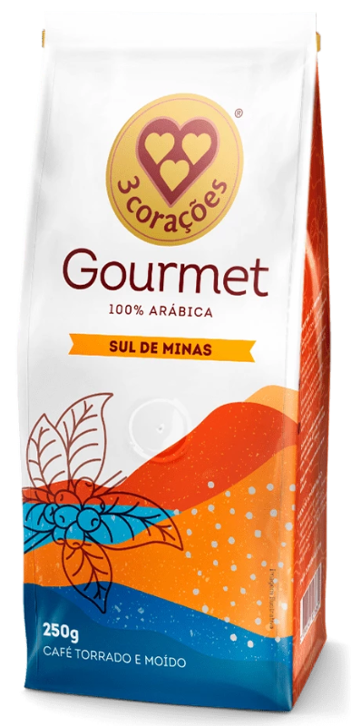
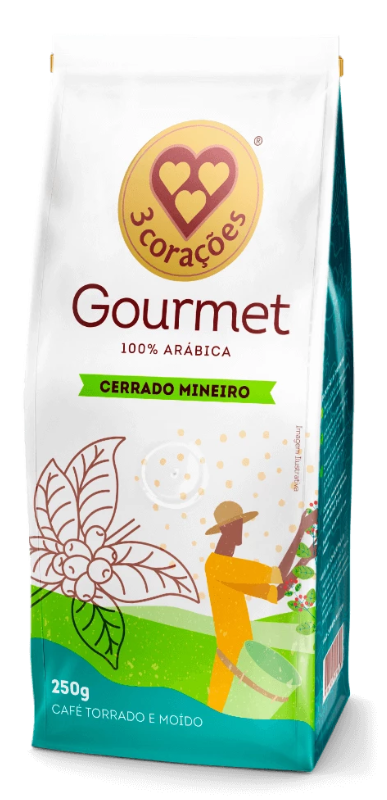
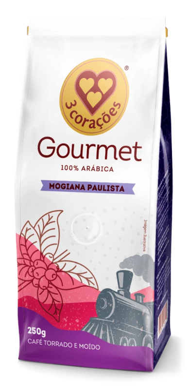
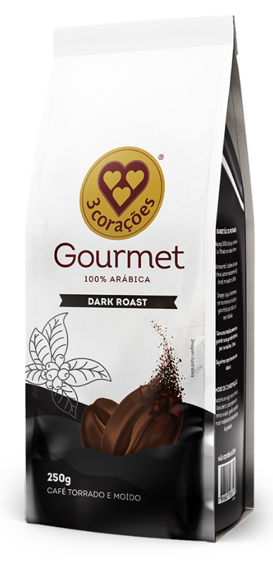

Sobre a Loja
Na Grão Dourado, celebramos a paixão pelo café gourmet, oferecendo uma experiência inigualável com os melhores grãos da 3 Corações. Nossa curadoria cuidadosa seleciona as variedades mais premiadas e saborosas, transformando cada xícara em um momento de puro deleite.

Sul de Minas
| Sabor | Aroma | Acidez | Corpo |
|---|---|---|---|
| Suave | Florais | Média | Leve |

Cerrado Mineiro
| Sabor | Aroma | Acidez | Corpo |
|---|---|---|---|
| Intenso | Amadeirado | Baixa | Médio |

Mongi Paulista
| Sabor | Aroma | Acidez | Corpo |
|---|---|---|---|
| Caramelizado | Chocolate | Alta | Encorpado |

Dark Roast
| Sabor | Aroma | Acidez | Corpo |
|---|---|---|---|
| Amargo | Torrado | Baixa | Forte |